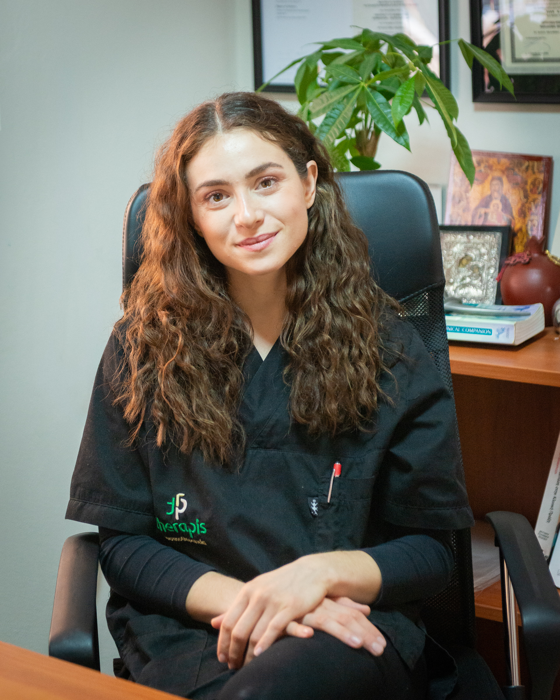
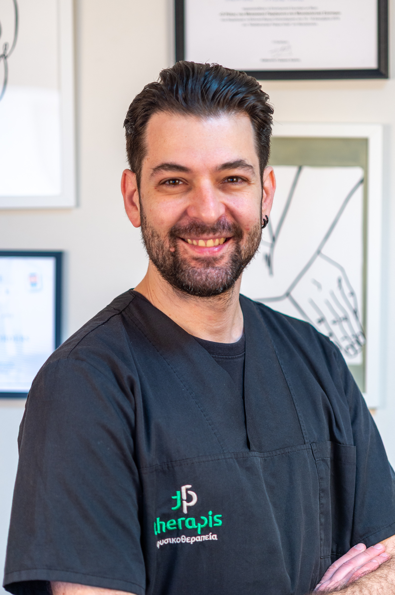

Having completed our first year of operation, Therapis Physiocenter has already established itself as a sanctuary for recovery in the heart of Mires. Founded with a vision to merge clinical excellence with a patient-centered approach, we treat every individual as a unique case, not just a symptom. In our first 12 months, we have helped hundreds of patients regain their mobility through evidence-based techniques and state-of-the-art equipment. Our journey has just begun, and our commitment to your health remains stronger than ever.

Marilena Roukounaki is a graduate of the Department of Physiotherapy of the University of Patras. She works with athletes (football, cycling, runners, dancers, etc.). She has training in Ergon I (Basic) and II (Advanced) techniques, as well as in modern rehabilitation and strengthening methods through Blood Flow Restriction (BFR) with Kinetic Flossing, safely offering faster results in muscle injuries. She is specialized in the use of the painless dry needle technique (Dry Needling). Her special interest in Geriatric Physiotherapy was sealed with her scientific research on physical activity, mental health and functionality of the elderly, which is part of the international bibliography in PubMed. Finally, she holds official certification from KEDIVIM of the University of Patras in the rehabilitation of Pelvic Floor Dysfunctions (Levels I & II). At Therapis, like all our sessions, pelvic floor therapy takes place in a specially designed, private space, ensuring the absolute privacy and comfort required by the nature of this specific rehabilitation.

Chrysostomos Pazaridis is a graduate of the University of Patras and holds an MSc from the University of Birmingham, UK, one of the world's leading institutions in rehabilitation. He specializes in the Schroth method, the most recognized approach to the treatment of scoliosis and spinal deformities. With an emphasis on Manual Therapy and clinical assessment, he applies personalized protocols that combine international expertise with the advanced equipment of the Therapis center.